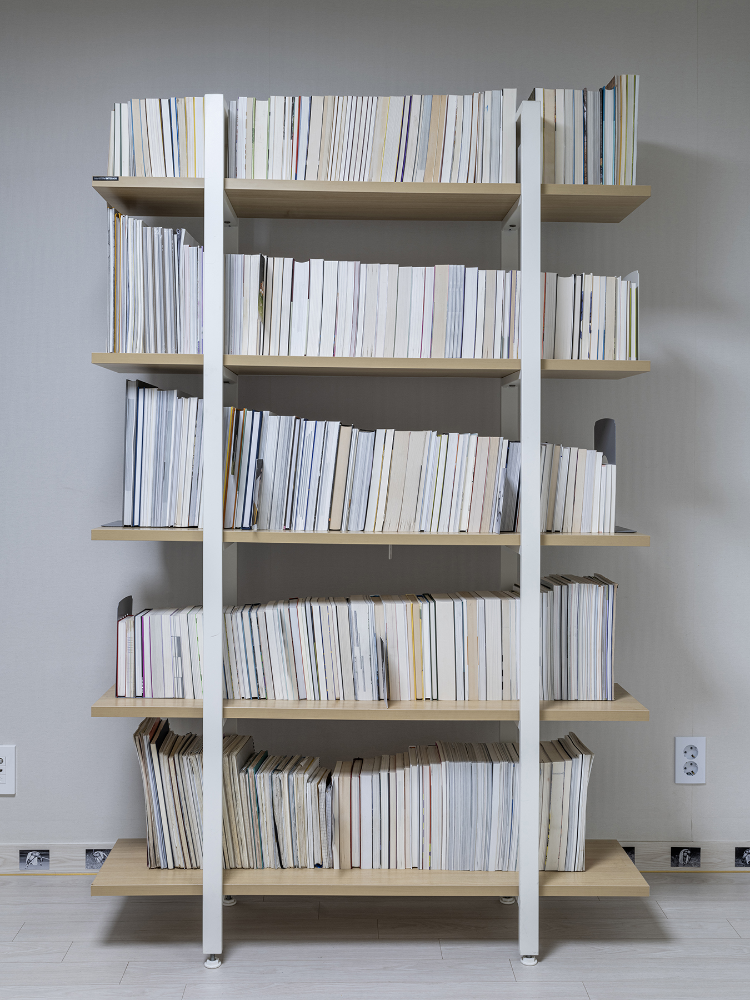
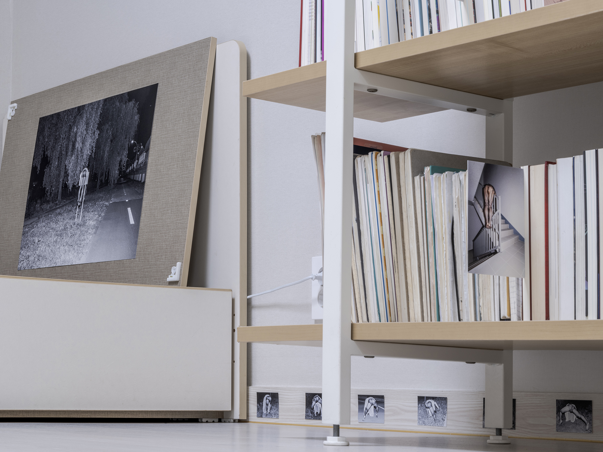
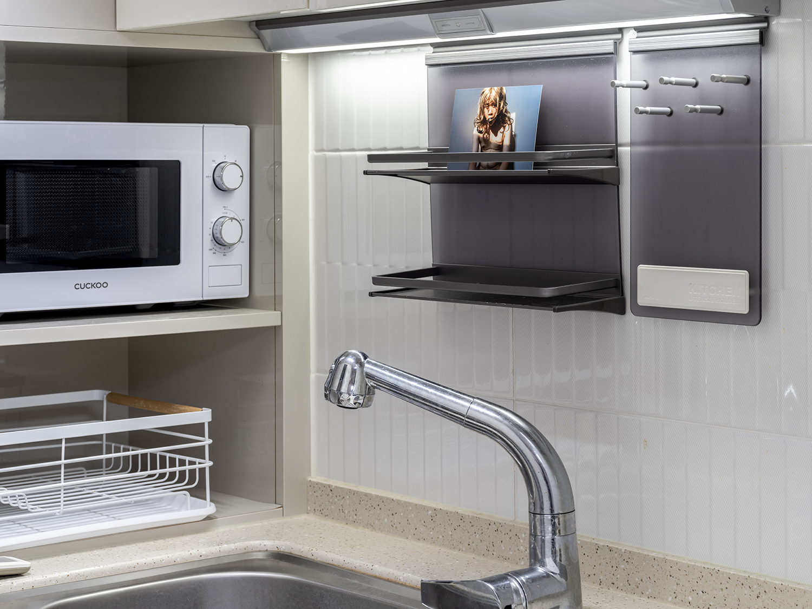
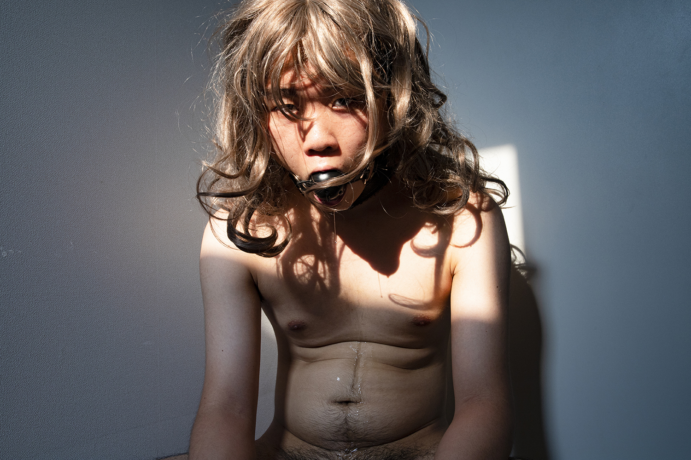
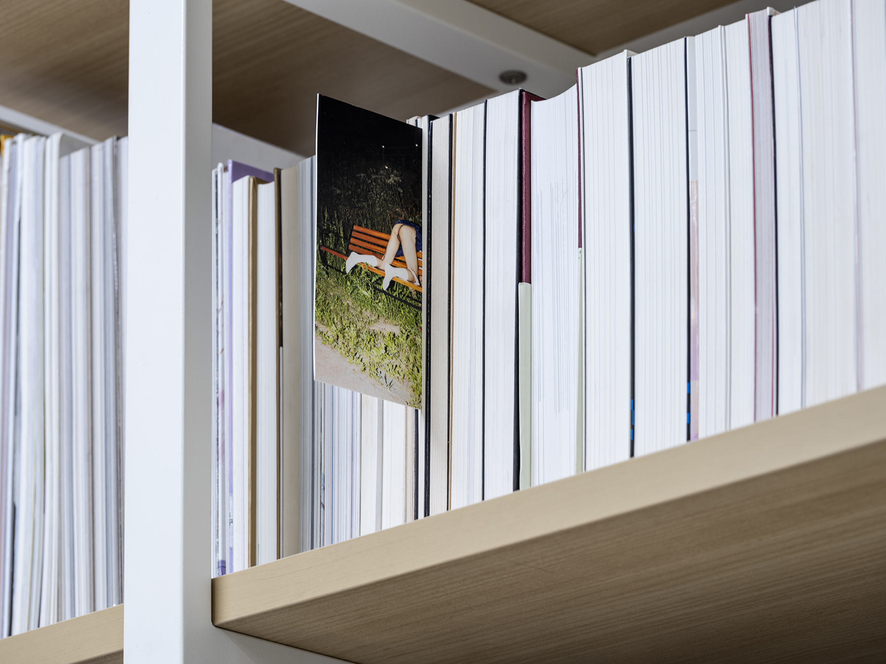
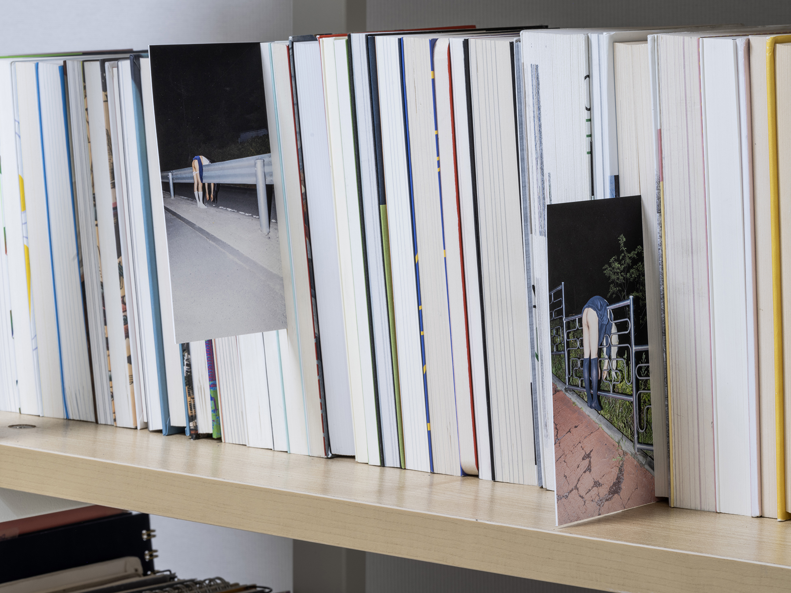
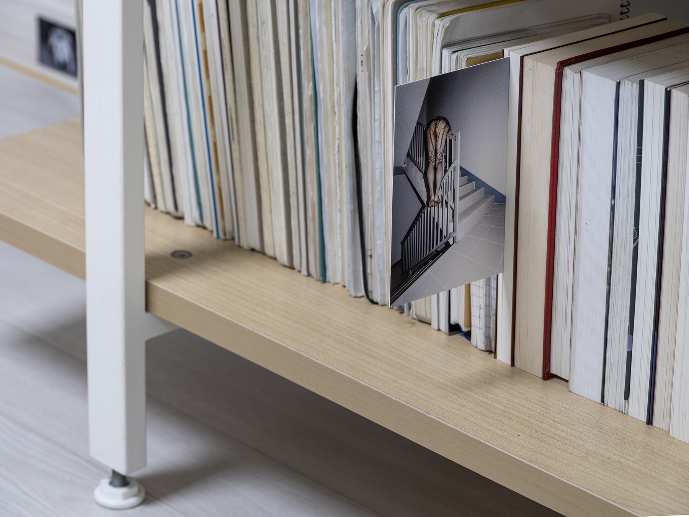
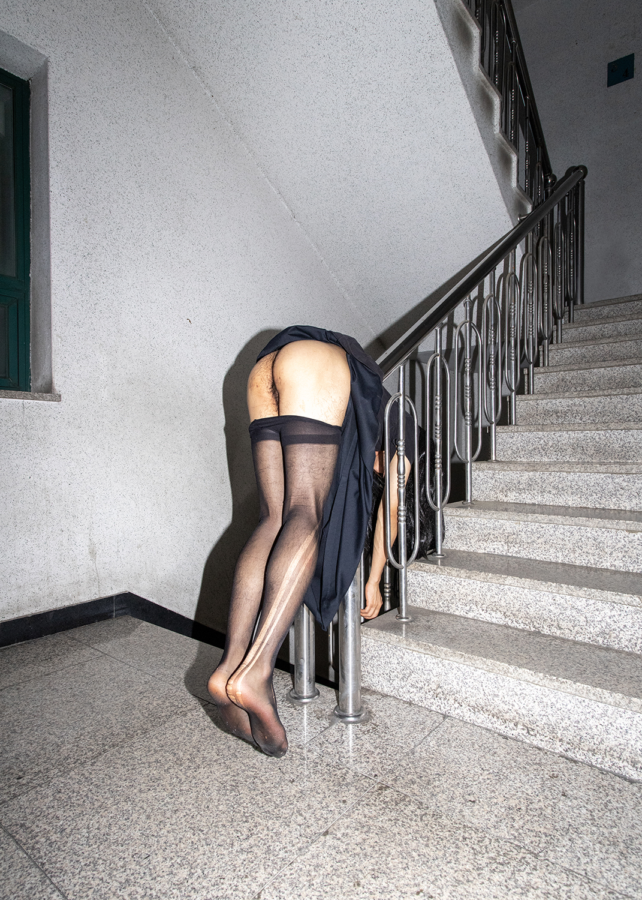
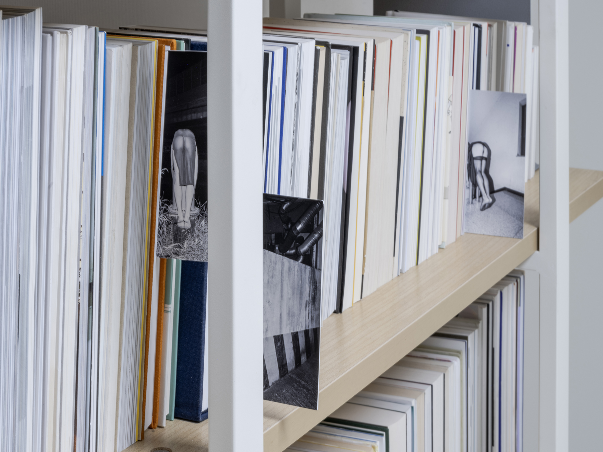
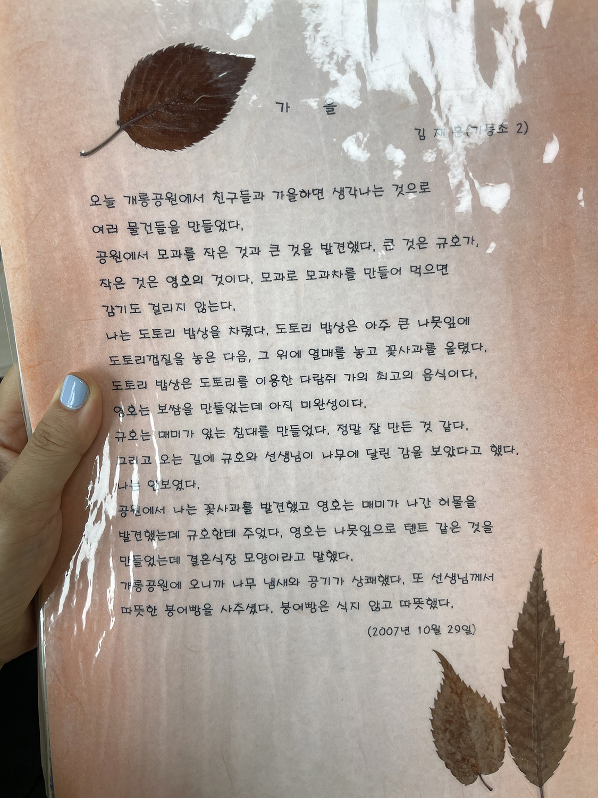

대화 (1)
<
안초롱: 전시의 플로우 플랜과 간략한 설명 글을 봤을 때, 《오래된 방은 궁전》은 재훈 씨가 작업을 진행했던 지난 1년을 갈무리하는 전시라고 이해했는데요. 이 일련의 작업은 언제부터 해야겠다고 생각하셨는지 궁금해요.
재훈: 이번 전시에 선보인, 연작이라고 부를 수 있는 작업들이요.
안초롱: 그러니까 언제부터 여장을 하고 사진 찍었는지
재훈: 여장... 2023년 초여름 정도였을 거예요.
안초롱: 그럼 그전에는 여장을 하지 않으셨던 건가요? 작업으로써가 아니라 개인적으로 그런 취미가 있는지 궁금해요.
재훈: 안 튀는 장치마 입는 건 좋아해요. 바지도 치마처럼 생긴 걸 선호하고.
안초롱: 저는 실제로 그런 취미를 가지고 있을 거라 생각하기도 했거든요.
재훈: ‘여장’이라는 단어의 기대에 부합할 정도는 아니에요. 앞으로 어떻게 될지는 모르죠.
안초롱: 전시 리뷰를 지금처럼 대화의 형식이 아니라 ‘나에게 글을 의뢰했다면 어떻게 썼을까?’라는 생각을 좀 해봤거든요? 저는 글의 꼭지가 되는 주제어로 ‘앞면과 뒷면’이 좋겠더라고요.
사실 저는 여장이 작가의 실제 취미라고 상상했어요. 낮에는 자신을 숨기며 사회적인 면모를 보여주고 밤에는 남들로부터 숨기고 싶은 자기의 뒷면을 보여주는 사람이겠거니 하고요. <끝없이 걷는 날>의 주된 소재인 엉덩이가 신체의 뒷면이기도 하고, 전시공간으로 사용된 오피스텔에 들어갔을 때 오른쪽에 보이는 책장 작업 <여름의 뒷면>에서도 책갈피처럼 끼인 사진을 보여주면서도 책장의 책들은 모두 뒤집어놓은 것 하며, <오래된 방은 궁전> 또한 옷장의 뒷면을 보여주는 작업이고요. 이런 면면들을 종합해 봤을 때, 이 작가는 ‘앞과 뒤를 가지고 노나?’라는 생각이 자연스럽게 들었어요.
그리고 저는 <여름의 뒷면>을 볼 때 거기 꽂힌 사진이나 책 말고 노트도 꺼내 봤거든요? 보니까 (재훈 씨는) 굉장한 메모광이시더라고요.
재훈: 메모광이요?
안초롱: 어렸을 때부터 쓴 공책에 메모가 많던데요? 책장 제일 아래층이요.
 
재훈: 아, 네네. 책 꺼내서 본 사람은 여럿 있었는데 노트 꺼내서 본 사람은 또 처음 보네요.
안초롱: ‘이런 거 진짜 안 버리기가 힘든 건데’ 생각하며 봤어요. 너무 귀엽던데요? 저 화장실 수납장이랑 냉장고도 다 열어봤어요. 요새 뭐 먹나 궁금해서요. 관객들이 이럴 수 있다는 걸 알고 제공하신 거 아니에요?
재훈: 그렇죠. 안 막아놨으니까.
안초롱: 제가 기억하기에 《오래된 방은 궁전》은 굉장히 사적인 공간 안에 자기의 뒷면을 펼쳐놓고 그 장면을 관객이 몰래 훔쳐볼 수 있게 설정해 둔 전시였어요. 그래서 관음에 관음을 더한 구조가 중심이라고 생각하고요. 모든 사람에게는 자기가 보여주고 싶은 면과 그렇지 않은 면이 있잖아요. 후자 또한 나의 일부이긴 하지만 더불어 살기 위해서는 결국 연기를 하게 되고요. 같은 맥락에서 이 작가의 외형적인 젠더는 남성이지만, 작품 제작 과정의 일환으로 ‘여성-되기’를 시도하면서, 누군가를 연기하고 있는 건가 싶기도 했어요.
전시 공간에 들어가자마자 있었던 <대기 시간>이 그 예상과 매칭되는 작품 같네요.
 
이 입마개를 부르는 전문적인 용어가 있던데요?
재훈: 볼개그.
안초롱: 그걸 물고 있던 사진에서도 무언가를 연기하고 있는 것처럼 보였어요. 근데 《모텔전: 눈 뜨고 꾸는 꿈》 리뷰1에서 재훈 씨가 <대기 시간>에 대해 ‘이 사진에 담긴 모습이 진짜 나의 모습이다’라고 말하셨더라고요. 그래서 이 모습이 재훈 씨의 뒷면에서 튕겨지는 부분들 아닌가 싶기도 했죠.
재훈: 그런 모습을 생활할 때 내보이고 다니지는 않죠.
안초롱: 그러면 이상하지. 한편으로는 이런 생각도 들었어요. ‘이 사람이 여장을 통해 정말 여자가 되고 싶긴 한 건가?’ 왜냐하면 완벽한 여장이 아니니까. 가발도 다듬어져 있지 않고, 털 정리가 되어 있는 것도 아니고. 성기가 보이는 사진에도 남성의 음낭이 잘 보이지 않게 집어넣는 기법(Tucking)을 쓰셨잖아요. 그런 선택들을 보면서 ‘이 사람도 자기의 목표가 여자 되기인지를 헷갈리나?’라고 생각하게 됐어요.
재훈: 음... 저는 본인의 트랜지션 과정을 작업물로 기록하는 작가들이 이제 적지는 않다고 생각해요. 굳이 작품으로 만들지 않더라도 트랜지션을 하는 사람의 수도 적잖고요. 드랙Drag 같은 건 이제 대중에게도 낯설지 않지 않나요?
저도 그들처럼 훨씬 꼼꼼하게 (초롱 씨 표현대로라면) ‘여장’을 할 수도 있었겠죠. 근데 저는 촬영 과정에서의 분장 행위를 ‘여장’으로 인식하지 않았어요. 이상하죠. 여장이란 선택지로 직진하지 않고 지금처럼 그 중간 지점에 머무른 이유는, 일단 이 상태만으로도 충분하고, 할 수 있는 게 있을 거란 직감이었어요.
안초롱: 남성의 골격이나 성기를 철저히 감추지 않고, 노출하는 선택이 ‘아예 다 되고 싶지는 않음’을 나타내는 것 같긴 했어요. ‘정말로 여자인지?’라는 질문이 아닌, 다른 무언가를 표현하고 싶다는 생각도 들었고요.
혹시 <여름의 뒷면>이 《모텔전》에도 출품됐었나요?
    
재훈: 아니요. <여름의 뒷면>은 이번 전시에서 처음 공개한 신작이에요. 촬영 순서는 <끝없이 걷는 날>, <오래된 방은 궁전>, <무제>, <여름의 뒷면>으로, <여름의 뒷면>에 쓰인 사진을 가장 나중에 찍었습니다.
안초롱: <끝없이 걷는 날>과 <여름의 뒷면>, 이 두 작품이 굉장히 다르잖아요. 크게 봤을 때 생명이 있고 없고의 차이로 받아들였는데요. 어딘가로 걸어가는 포즈의 <끝없이 걷는 날>과는 달리 ‘<여름의 뒷면>에서는 왜 본인을 무생물처럼 보여주고 싶었을까? 몸이 어딘가에 걸려 있는 포즈는 어떻게 선택하게 된 걸까?’라는 궁금증이 있었어요.
재훈: 무생물처럼 보인다는 감상 재미있네요. 말씀해 주신 것처럼 <끝없이 걷는 날>과 <여름의 뒷면>은 그 뒷배경에 둔 이야기가 각기 달라요. <여름의 뒷면>은 만들 때 죽은 여자들에 대해 한참 생각했습니다.
여자들이 많이 죽잖아요. 뉴스나 트위터를 통해서 혹은 친구나 동료를 통해서, 지인의 지인이 ‘그렇게 됐대’ 하는 이야기를 적지 않게 듣게 되죠. 이건 남자인 친구들 곁에만 있었을 때는 접하지 못한 소식인데, 여자인 친구가 점점 많아지면서 알게 되는 또 다른 현실이었어요. 듣는 이야기가 쌓이다 보니 아직 내가 직접 경험하지는 못한, 그 여자들의 죽음을 어떻게 받아들여야 하는지에 대한 혼란을 느끼게 되었고요.
그러던 시기에 <끝없이 걷는 날>을 이루는 사진이 ‘엉덩이 포트레이트’ 같다는 생각이 들었어요. ‘그렇다면 이 엉덩이로 할 수 있는 또 다른 말은 무엇일까?’를 고민하다 보니 <여름의 뒷면>의 포즈가 나온 것이 아닌가 짐작합니다. 이 사진들을 보면서는 어떠셨나요?
안초롱: 좀 불쾌하긴 했어요. 쾌/불쾌가 작업의 좋고 나쁨과 직결된다기보다는, 불쾌하면 시간이 지나도 그 대상이 머릿속에 떠오르잖아요. 그때 내가 왜 불쾌했는지를 되돌아 보고, 싫어하는 이유를 생각하다 보면 자기 자신이 드러나게 되고요. 어떻게 보면 모순적으로 좋은 작업이기도 하죠.
재훈: 왜 불쾌하셨어요?
안초롱: 이미지를 얼핏 보면 엎드려 있는 여자의 엉덩이가 제일 먼저 읽히잖아요. 그러다 보니 남자 혹은 여자라는 범위보다는, 박히기를 기다리고 있는 엉덩이만 보이는 거죠. 그 이미지가 성폭행 의혹을 받은 작가들의 책 사이에 끼워져 있는 선택에 대해서도 여러 가지 생각이 들었어요. 이 사건들을 고발하려는 의도인가 싶기도 하고.
재훈: 고발처럼 공적인 발언을 의도한 건 아니었어요. 왜냐하면 그 사건들은 제가 추가로 고발하지 않아도 이미 뉴스를 통해 잘 알려져 있었거든요. 그보다는 그런 소식을 전해 들음으로써 이제는 더 이상 좋아할 수 없게 된 예술가들의 책을 내 책장에서 버릴 것인가 그대로 둘 것인가. 버리지 않는다면 그대로 방치할 것인가 혹은 어떤 조치를 할 것인가와 같은, 개인의 딜레마였어요.
안초롱: 이 작업뿐만 아니라 책장 자체를 보면서 그런 생각도 했어요. 문학을 좋아하고 책을 아주 많이 읽으시는 분이시구나. 초등학교 때부터 글을 되게 잘 쓰셨던데요? 어렸을 때 글 잘 썼다는 얘기 안 들었어요?
재훈: 최근에 초등학교 친구에게 그런 이야기는 들었어요. 어릴 때 친구가 레고 블록으로 공룡을 만든 후 제 앞에서 ‘공룡이다~!’ 이러고 있는데 제가 ‘그거 공룡 아니야, 레고야.’라고 말했다고.
안초롱: 상처를 많이 줬네. 친구들한테. 근데 이 글은 정말 잘 썼어요. 초등학교 2학년 때 쓰신 것 같은데 읽으면서 ‘그 나이에 이렇게 쓸 수 있다고?’ 싶었어요.
재훈: 기억이 안 나는데 혹시 뭐라고 쓰여 있나요?
안초롱:
오늘 개롱공원에서 친구들과 ‘가을’하면 생각나는 것으로 여러 물건을 만들었다.
공원에서 모과를 작은 것과 큰 것을 발견했다. 큰 것은 규호가, 작은 것은 영호의 것이다. 모과로 모과차를 만들어 먹으면 감기도 걸리지 않는다.
나는 도토리 밥상을 차렸다. 도토리 밥상은 아주 큰 나뭇잎에 도토리 껍질을 놓은 다음, 그 위에 열매를 놓고 꽃사과를 올렸다. 도토리 밥상은 도토리를 이용한 다람쥐 가의 최고의 음식이다.
영호는 보쌈을 만들었는데 아직 미완성이다.
규호는 매미가 있는 침대를 만들었다. 정말 잘 만든 것 같다.
그리고 오는 길에 규호와 선생님이 나무에 달린 감을 보았다고 했다. 나는 안 보였다.
공원에서 나는 꽃사과를 발견했고 영호는 매미가 나간 허물을 발견했는데 규호한테 주었다. 영호는 나뭇잎으로 텐트 같은 것을 만들었는데, 결혼식장 모양이라고 말했다.
개롱공원에 오니까 나무 냄새와 공기가 상쾌했다.
또 선생님께서 따뜻한 붕어빵을 사주셨다. 붕어빵은 식지 않고 따뜻했다.

재훈: 제가 쓴 글이라고 도저히 믿을 수 없네요. (웃음)
안초롱: 잘 쓰지 않았어요? 자신이 경험한 상황이 머릿속에 들어오게끔 묘사하면서, 자기가 본 것과 만진 것들을 있는 그대로 솔직하게 썼잖아요. 어떻게 보면 이런 사진들을 찍은 사람과 동일 인물인가 싶을 정도로 순수했는데요. 그런 헷갈리는 포인트가 또 하나 있었어요.
전시가 열린 이 집이 여자 집인지 남자 집인지 잘 모르겠는 거예요. 아까 제가 구석구석 다 열어봤다고 그랬잖아요. 근데 보니까 ‘화장을 안 하는 여자 집이라고 생각할 수도 있겠다.’ 싶었어요. 책장에 대광여고 졸업 앨범이 꽂혀 있던 것도 그렇고, 냉장고에는 닭가슴살이랑 바나나가 있더라고요. ‘식단 조절을 하고 있나 보다.’ 생각했죠.
재훈: 책장 들여다보는 사람은 많은데, 냉장고까지 들여다보고 말해준 사람은 초롱 씨가 처음이에요.
안초롱: 그래요? 집을 공개를 하시니까 볼 수밖에 없지. 심지어 옷장도 꺼내서 볼까 하다가 좀 오바인 것 같다고 생각하긴 했어요. 근데 또 침대 밑 수납함에 여자 옷이랑 가발이 있던데, 작업할 때 쓰신 것 맞죠?
재훈: 그렇죠... (이 사람 정말...)
안초롱: 사진에서 쓰인 가발이랑 비슷해 보이더라고요. 혹시 부끄러우세요?
재훈: ... 네.
안초롱: 뭐 이런 사진을 찍었으면서 부끄러워해요? (웃음)
재훈: 다른 사람 작업 이야기는 신나서 하는데, 제 작업 이야기할 때는 항상 그래요.
안초롱: 엉덩이 다 까놓고 밖에 나가서 사진 찍어놓고서 부끄러워하는 건 진짜 황당하다. 그럴 수 있지, 재밌네요.
- 김남영·김민·김중균·성재윤·재훈·허호,「《모텔전: 눈 뜨고 꾸는 꿈》 리뷰 - 재훈 편 2화」. W/O F., 『Without Frame! Vol.3: 모텔전, 눈 뜨고 꾸는 꿈』, 우프, 2024
대화 (2)
안초롱, 재훈
2024.07.31